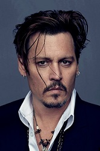
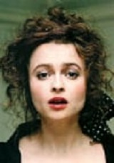
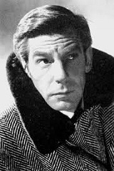

Actores Destacados
Tim Burtom suele recurrir a ciertos actores para sus peliculas o las voces de las mismas
Johny Depp
Actor, productor de cine y musico estadounidense.Durante muchos años hizo de protagonista de muchas de las producciones de Tim Burton lo que lo llevo a ser un icono de hollywood dada la relación entre director y actor ha sido una de las más fieles y prolíficas. Entre las peliculas destacadas de encuentran:
- El Joven Manos De Tijera
- Ed Wood
- Sleppy Hollow
- Charlie y La Favbrica De Chocolate
- La Cadaver De La Novia
- Sweeney Todd
- Alicia En El Pais De La Maravillas
- Sombras Tenebrosas
Helena Bonham Carter
Actriz britanica, ganadora del premio BAFTA y nominada a dos premios Oscar,debido a la diversificacion de sus peliculas la ha convertido en una de las actrices más queridas del Reino Unido e internacionalmente debido a sus personajes característicos.Junto a Tim Burtom a realizado numerosos proyectos cinematograficos, ciendo una de las actrices mas recurrentes en los films de Tim Burtom. Entre las peliculas que tinen se encuentran:
- Sweeney Todd
- Alica En El Pais De Las Maravillas
- El Cadaver De La Novia
- El Planeta De Los Simios
- El Gran Pez
- Sombras Tenebrosas
- Charlie y La Fabrica De Chocolate
- Alicia A Traves Del Espejo
Winnona Ryder

Winona Laura Horowitz más conocida como Winona Ryder, es una actriz estadounidense, 2 veces nominada al Óscar y ganadora de 1 Globo de Oro. También se ha iniciado en la producción cinematográfica.Debutó en la película Lucas (1986). Sin embargo, el papel por el que ganó reconocimiento fue el de Lydia Deetz, una adolescente de estética gótica, en la película Beetlejuice (1988).gracias que trabajó al lado del director Tim Burton, su carrera comenzó a despegar. Sin duda, Burton es uno de los directores que destaca por su manera oscura de dirigir sus filmes, una imagen con la que también se relacionaba a la actriz.
- Beetlejuice
- El Joven Manos de Tijeras
- Frankenweenie
Michael Gough
Francis Michael Gough fue un actor británico que intervino en más de 100 películas con roles secundarios. Quizás su papel más conocido por el público internacional fue su interpretación del mayordomo Alfred Pennyworth, en las cuatro películas de Batman dirigidas por Tim Burton y Joel Schumacher.
- Batman
- Batman regresa
- Batman eternamente
- La leyenda del jinete sin cabeza
- El cadáver de la novia
- Alicia en el país de las maravillas
- Batman y Robin